<div class="container">
  <div class="chat-container">
    <div class="chat" *ngIf="messages?.length > 0">
      <div class="ind" *ngFor="let msg of messages">
        <div class="user" *ngIf="msg.message.role === 'user'">
          
          <div class="content">{{ msg.message.content }}</div>
        </div>
        <div class="gpt" *ngIf="msg.message.role === 'assistant'">
          
          <div class="content">{{ msg.message.content }}</div>
        </div>
      </div>
    </div>
    <div class="heading" *ngIf="messages?.length <= 0">
      <div class="main">Chat GPT <span>clone</span></div>
      <div class="sub">using Angular JS</div>
    </div>
  </div>
  <div class="input-container">
    <div class="input-item">
      <input
        type="text"
        id="chat-input"
        autocomplete="off"
        (change)="insertTheMessage($event)"
        #InputElement
      />
      
    </div>
    <div class="footer">
      <span>ChatGPT Clone using Angular</span>
      <span>&copy; Venura Warnaosooriya</span>
      <span>03<sup>rd</sup> August 2023</span>
      <span>OpenAI API</span>
    </div>
  </div>
</div>
